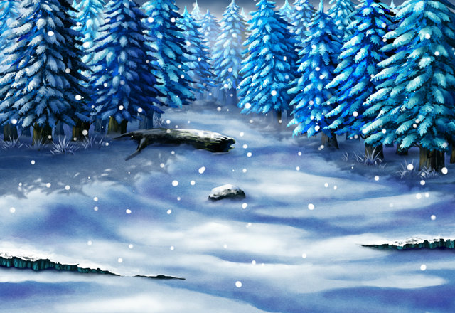

Liana
Luciana...has already passed through the Snowstorm Woods and moved on ahead...
Reda
What sort of route lies ahead, on the way to the Mystical Wolf?
Liana
To get to the polar regions where the Mystical Wolf dwells...
Liana
...one must pass along the Subzero Road that lies ahead, but...
Liana
...to enter it, we descendants of the imperial line...
Liana
...must perform a ceremony at the shrines near Raujis Lake and the Mirage Snowfields.
Tilith
So basically, we need to go to both Raujis Lake and the Mirage Snowfields?
Liana
Of course, since my sister also knows the ceremony...
Liana
...it seems likely she will head toward one or the other now.
Reda
Since letting her get any farther ahead would be particularly bothersome...
Reda
...I'd really like to catch her before she heads for the Subzero Road.
Reda
So, let's split into two groups here.
Reda
Tilith and Liana, you two head for Raujis Lake.
Reda
I'll proceed to the Mirage Snowfields on my own.
Tilith
Reda, will you be okay on your own?
Reda
Don't worry. I've always been good at working alone...
Reda
That was usually what I did, back in Grand Gaia and Ishgria.
Reda
More than anything, I'm just pushed into roles that discourage solo activity lately thanks to that imbecile.
SCOUT-F03
What should we do?
REPTO-MTX
Boop, boop... Ping...
Reda
Oh, right, you two... I completely forgot about you.
Reda
Well, why don't you go with Tilith's group?
SCOUT-F03
My partner aside, this kind of situation is precisely when I come into play!
SCOUT-F03
Aerial scouting is my specialty!
Reda
I see... Then I guess Hatch will be coming with me.
Tilith
Then it's me, Liana, and Tull-Tull for Raujis Lake.
Tilith
And Reda and Hatchy for the Mirage Snowfields.